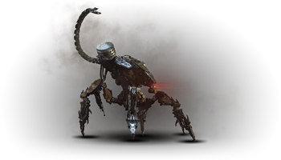
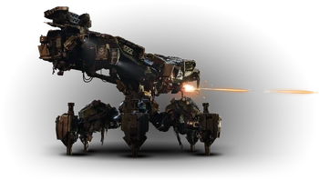
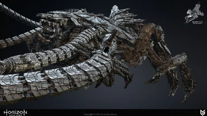

Gamme Char
Le Corrupteur

Le temps passé sous terre l’a rendu sensible à la chaleur, mais il reste une machine de guerre agile et redoutable
Composants :
- Corps : Faible face au feu, résistant à la corruption
- Lance-grenades : Faible face à la déchirure, aucune résistance
- Lanceur de pics : Faible face à la déchirure, aucune résistance
- Noyau de chaleur : Faible à tout type d’attaque, aucune résistance
Butin :
- Éclat de métal
- Brûlure de métal
- Noyau de machine – moyen
- Tresse lumineuse
- Lentille de moyen
- Cœur de moyen
Piratage : Indisponible
Conseils : Création antérieure aux machines que vous rencontrerez, le Corrupteur fait partie de ces
machines antérieures au cataclysme qui a frappé l’humanité. Son ancienneté n’en fait pas un adversaire
à prendre à la légère. Ses deux armes font de bonnes cibles, mais du fait qu’il se déplace constamment,
une immobilisation vous aidera grandement à les atteindre.
Le Porte-Mort

Cette plateforme d'armement ancienne récemment déterrée a été conçue pour offrir une puissance dévastatrice. Sujette à la surchauffe.
Composants :
- Corps : Faible face au feu et à l'éléctricité, aucune résistance
- Tourelle de canon à répétition : Faible face à tout type d’attaque, aucune résistance
- Tiges de refroidissement : Faible face à tout type d’attaque, aucune résistance
- Noyau : Faible face à tout type d’attaque, aucune résistance
- Lance-flamme : Faible face à tout type d’attaque, aucune résistance
- Lance-grenades : Faible face à tout type d’attaque, aucune résistance
- Aération : Faible face à tout type d’attaque, aucune résistance
- Tourelle : Faible face à la déchirure, aucune résistance
- Lanceur multiple : Faible face à tout type d’attaque, aucune résistance
- Stabilisateur : Faible face à tout type d’attaque, aucune résistance
- Tourelle de canon lourd : Faible face à tout type d’attaque, aucune résistance
Butin :
- Éclat de métal
- Réceptacle métallique
- Tresse de cristal
- Noyau de machine – gros
- Lentille de Porte-Mort
- Cœur de Porte-Mort
Piratage : Aucun
Conseils : Le Porte-Mort est une machine très solide mais qui n'est pas dépourvue de faiblesses. Il est sujet à
la surchauffe et expose régulièrement ses aérations et tiges de refroidissement qui peuvent être détruites pour
le mettre à terre ou lui infliger plus de dégâts. Ses armes sont également peu blindées et peuvent être ciblées
comme points faibles. Les munitions infligeant des dégâts de feu permettent de le faire surchauffer et de le
forcer à exposer ses systèmes de refroidissement. Son noyau est le point faible le plus facile à viser lorsqu'il
est exposé. Ses mitrailleuses latérales peuvent également être détachées et utilisées contre lui.
Démon de métal

Une machine de guerre destructrice de bout en bout, conçue pour détruire des fortifications
Composants : Aucune information
Butin : Aucune information
Piratage : Aucune information
Le FAS-BOR7 HORUS, surnommé le Démon de métal par les Carjas, est une machine de la gamme Char et de classe Titan conçu
par Faro Automates.
Le BOR7 "Horus" permet de gérer entièrement l'ensemble d'un écosystème d'assaut par son réseau de machines, capables
d'apprendre à grande vitesse, et de remplacer des pertes sur le champ de bataille ou intensifier la projection de forces,
grâce à ses fonctionnalités de production embarquées. Par ailleurs, les systèmes de conversion de biomasse des autres
modèles de la gamme Char leur permettront d'alimenter et de réparer en permanence l'Horus, prolongeant ainsi ses
tolérances fonctionnelles bien au-delà de toute plateforme de classe Titan concurrente.